Custom Memory Allocator from Scratch in C/C++
Every program thinks it owns the entire memory on your machine. That's a lie the OS tells it, and it's a useful one.
When your program accesses memory, it's not touching RAM directly. It's talking to virtual memory, an abstraction layer the OS puts between your program and physical RAM. Your program gets a clean, private address space that looks contiguous and starts from zero. What's actually happening underneath is a completely different story.
Physical RAM is divided into fixed size chunks called frames, typically 4KB each. Your program's virtual memory is divided into the same size chunks called pages. The OS maintains a data structure called the page table that maps each virtual page to a physical frame. When your program reads or writes an address, the CPU checks the page table and translates that virtual address to wherever the data actually lives in RAM.
The key thing is that virtual page 1 and virtual page 2 don't need to be in adjacent frames in physical RAM. They can be scattered anywhere. Your program never knows or cares, it always sees a clean contiguous address space. The page table handles the translation invisibly.
This is why two programs can both use address 0x1000 without stepping on each other. Same virtual address, completely different physical frames.
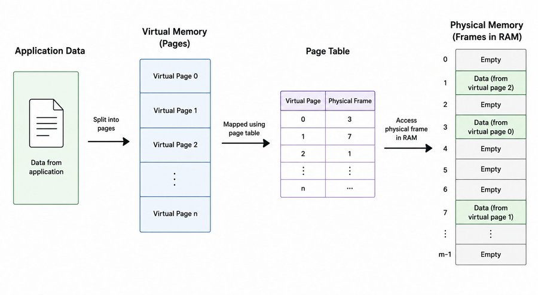
What happens when a page isn't in RAM yet?
RAM is limited. Your machine might have 16GB but you could have dozens of programs running, each with their own virtual address space. The OS can't keep everything in RAM at once, so it doesn't try.
When your program accesses a virtual address, the CPU checks the page table. If that page has a valid mapping to a physical frame, great, the memory access goes through. But if the page isn't currently in RAM, the page table entry is marked invalid. The CPU triggers a page fault.
A page fault isn't a crash. It's an interrupt that hands control to the OS. The OS finds the data on disk (in swap space), loads it into a free physical frame, updates the page table to point to that frame, and hands control back to your program. Your program never knew any of this happened.
This is also why your program can use more virtual memory than you have physical RAM. The OS just swaps pages in and out of disk as needed. The cost is that disk access is orders of magnitude slower than RAM, so if you're constantly page faulting you'll feel it.
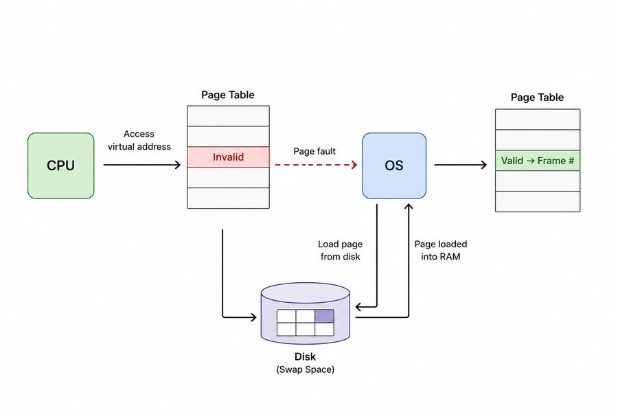
How your program gets memory from the OS
Your program doesn't talk to RAM directly. It asks the OS for memory, and the OS decides what to give it and where. There are two main ways to do this: sbrk and mmap.
sbrk
Your program has a region called the heap, a chunk of virtual memory reserved for dynamic allocation. The heap has a boundary called the program break. Everything below the break is yours, everything above is not.
sbrk moves that boundary. Call sbrk(1024) and the heap grows by 1024 bytes. The OS returns a pointer to where the old break was, which is the start of your new memory.
Simple, fast, but limited. The heap only grows in one direction. If you allocate block A, then block B, then free block A, that space can't go back to the OS until block B is also freed because the break is stuck behind B. This causes fragmentation and heap bloat over time.
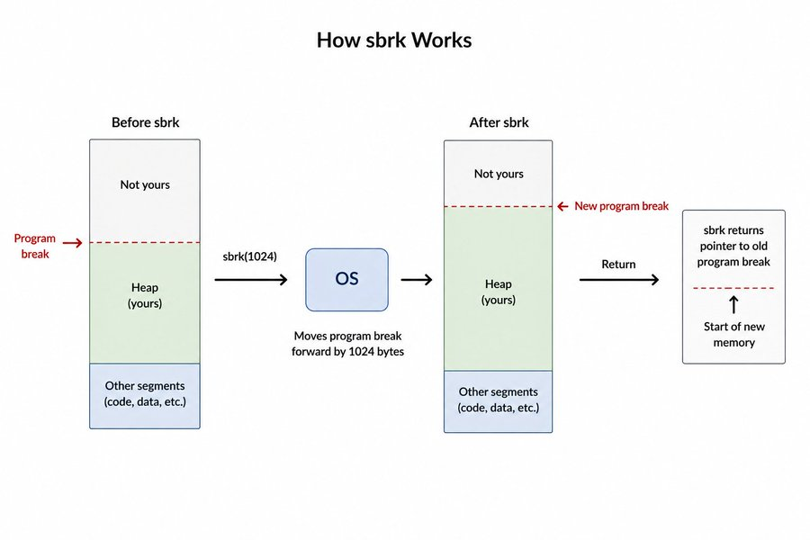
The other problem is large allocations. Say you allocate 1GB with sbrk. Your heap grows by 1GB. When you free that memory, the allocator marks it free internally but the OS still thinks your program is using the full 1GB. That memory stays claimed until everything above it is also freed, so the heap never shrinks. For programs that make large short-lived allocations, this is a real problem.
mmap
mmap is more flexible. Instead of extending the heap, it asks the OS for an entirely new region of virtual memory at an arbitrary address. You can request any size, and when you're done, munmap returns that region back to the OS independently, without touching anything else.
void* ptr = mmap(NULL, size, PROT_READ | PROT_WRITE, MAP_PRIVATE | MAP_ANONYMOUS, -1, 0);Breaking down each argument:
NULL is the address hint. You are telling the OS to pick the address itself. You can pass a specific address but there is rarely a reason to.
size is how many bytes you want. Unlike sbrk, you can request any amount independently of what you have already allocated.
PROT_READ | PROT_WRITE are the protection flags. This tells the OS the memory should be readable and writable. You can also pass PROT_EXEC if you need executable memory, but for a heap allocator you never need that.
MAP_PRIVATE | MAP_ANONYMOUS are the mapping flags. MAP_PRIVATE means changes to this memory are not shared with other processes. MAP_ANONYMOUS means the memory is not backed by any file, just zeroed pages from the OS.
-1 is the file descriptor. Required to be -1 when using MAP_ANONYMOUS since there is no file involved.
0 is the offset into the file. Also irrelevant for anonymous mappings, just pass zero.
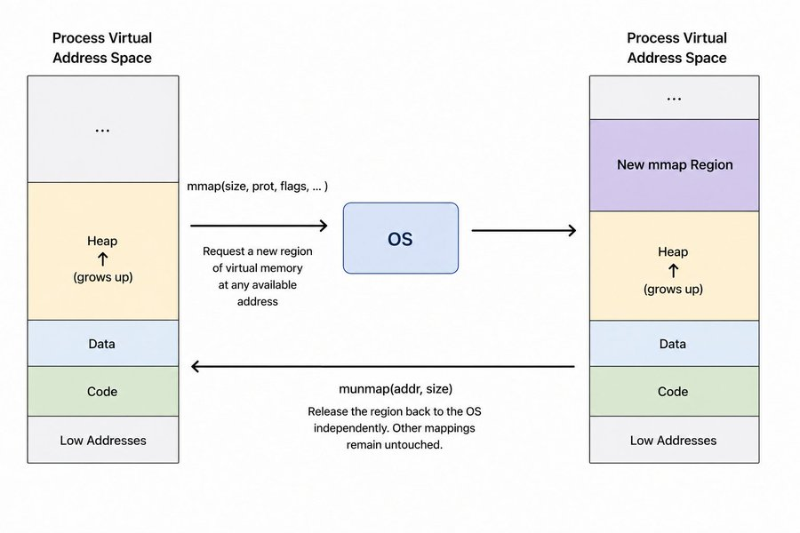
Block headers and metadata
When you call malloc(100), something needs to remember that this chunk is 100 bytes and whether it's in use or not. You can't just hand out raw memory and forget about it, because when free is called later, you need to know how much to reclaim.
The solution is to store that information yourself, right next to the memory you hand out.
Before returning memory to the user, the allocator writes a small struct just before it. That struct is the block header, or metadata. It sits invisibly in the heap, the user never sees it, but the allocator reads it every time it needs to manage that block.
For this allocator, the header looks like this:
struct block {
size_t size;
block* next;
bool is_free;
};
size is how many bytes the user requested. is_free tracks whether this block is available for reuse. next is a pointer to the next block in the free list, which we will get to shortly.
In memory, every allocation looks like this:
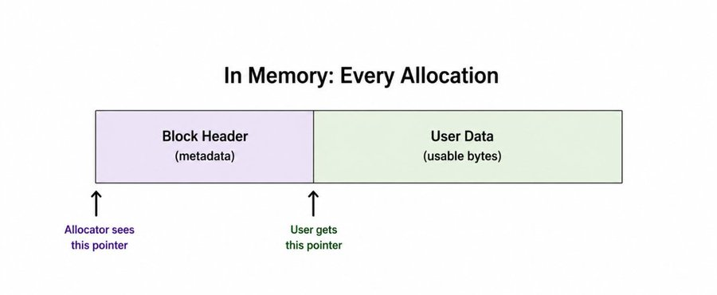
mymalloc and myfree is my implementation from scratch in C/C++, if interested for full implementation repo, you can check here.
When mymalloc is called, it places the header at the current position in the pool, writes the metadata, then returns a pointer just past the header. That pointer is what the user works with.
When myfree is called, the pointer comes back in. The allocator steps back by sizeof(block) to find the header sitting right before it, reads the size, and marks the block free.
block* meta = (block*)ptr - 1;
meta->is_free = true;One pointer subtraction and you are back at the metadata. That is the entire trick.
Free list
Every block your allocator has ever created needs to be tracked somewhere. That is what the free list is for.
The free list is a linked list of all blocks in your pool, both allocated and free. Every block points to the next one via the next pointer in its header. The allocator keeps a global pointer to the front of this list.
block* free_list = nullptr;
When a new block is carved from the pool, it gets added to the free list. When a block is freed, it stays in the list but gets marked is_free = true. It is not removed, not returned to the OS, just flagged as available.
This matters because the next time mymalloc is called, instead of immediately consuming new pool memory, it walks the free list first looking for a block that is already free and big enough to satisfy the request.
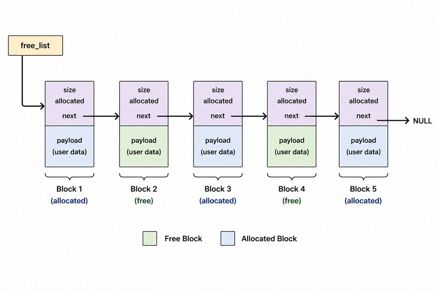
block* current = free_list;
while(current != NULL && !(current->is_free && current->size >= size)) {
current = current->next;
}
If current is not null after the loop, a suitable block was found. Mark it allocated and return it. No new memory consumed, no pool space wasted.
if(current != NULL) {
current->is_free = false;
return current + 1;
}If nothing fits, carve a new block from the pool.
One important detail: the free list must be kept sorted by memory address. If blocks are inserted in random order, coalescing breaks, which we will get to later. Every new block is inserted into the list at the position matching its address, not prepended to the front.
Block Reuse
Once a block is freed, it does not disappear. It stays in the free list with is_free set to true, sitting in the pool waiting to be claimed again. The next time mymalloc is called, it walks the free list before touching any new pool memory. If it finds a block that is free and large enough, it takes it.
This is the difference between a real allocator and just calling mmap every time. Reusing freed blocks means fewer system calls, less memory consumed, and better performance.
The proof is in the addresses. In the output below, ptr2 is allocated and gets address 0x7fa2c2420018. It gets freed. Then ptr3 is allocated and gets the exact same address 0x7fa2c2420018. No new pool memory was touched. The allocator found the freed block and handed it back.
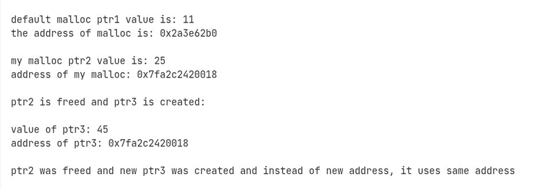
Alignment
When you ask for 7 bytes, your allocator does not give you exactly 7 bytes. It rounds up to 8. This is not a bug, it is alignment.
CPUs do not read memory one byte at a time. They read in fixed size chunks called words, typically 8 bytes on a 64-bit system. If your data starts at an address that is not a multiple of 8, the CPU has to do extra work to piece it together from two separate reads.
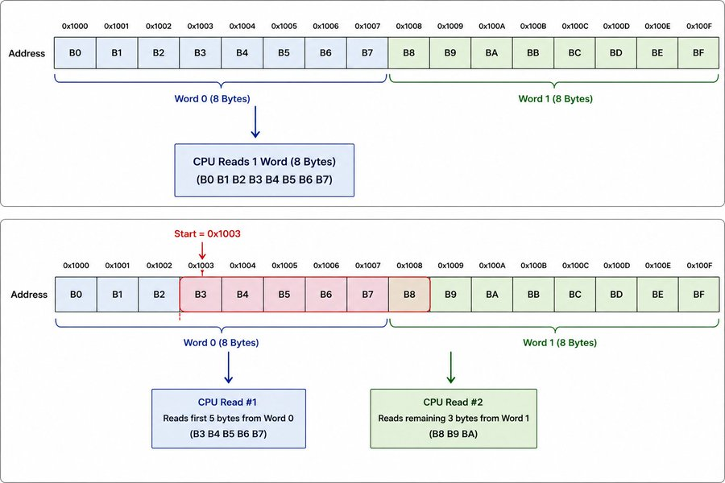
On some architectures like ARM, misaligned access will straight up crash your program with a bus error. On x86 it will not crash, but it is slower. Either way, you want your allocations to start at aligned addresses.
The fix is to round every requested size up to the nearest multiple of 8 before doing anything else. This one line handles it:
size = (size + sizeof(void*) - 1) & ~(sizeof(void*) - 1);
Breaking it down with an example. Say the user requests 13 bytes. sizeof(void*) on a 64-bit system is 8.
13 + 8 - 1 = 20
Then the bitwise mask ~7 in binary is 1111...11111000. ANDing 20 with that clears the lower 3 bits, rounding down to the nearest multiple of 8.
20 & ~7 = 16
So 13 bytes becomes 16. The pattern is, add 7 to push any non-aligned size past the next boundary, then mask to round back down. The combination gives you a round up.
sizeof(void*) is used instead of hardcoding 8 so it works correctly on both 32-bit and 64-bit systems.
First fit and Best fit
When mymalloc walks the free list looking for a block to reuse, it needs a strategy for which block to pick. There are two common approaches.
First fit takes the first block in the list that is free and large enough. The walk stops as soon as a match is found.
while(current != NULL && !(current->is_free && current->size >= size)) {
current = current->next;
}Simple and fast. You do not walk the entire list every time, just until you find something that works.
Best fit walks the entire list and picks the smallest block that is still large enough. The idea is to waste as little space as possible by finding the closest match.
Best fit sounds smarter but it has a real cost. You always walk the entire list, which is slower. And ironically, best fit tends to leave behind lots of tiny leftover fragments that are too small to be useful, which can actually make fragmentation worse over time.
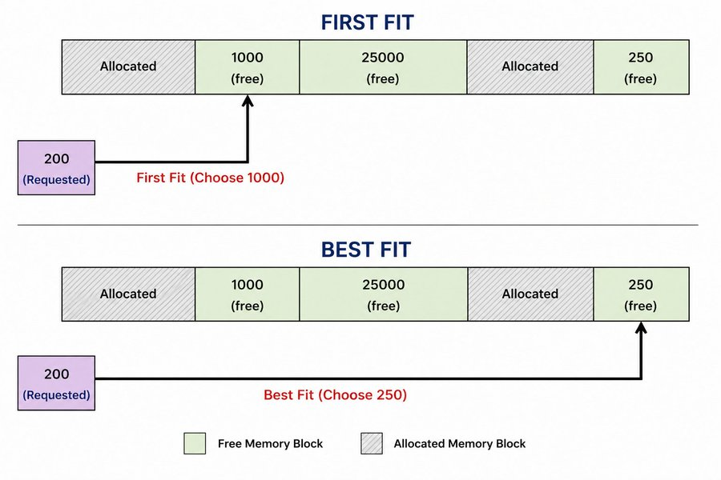
My allocator uses first fit. For a simple pool-based allocator it is the right call. The list is short, the overhead is low, and it gets the job done without the fragmentation side effects of best fit.
Coalescing
Block reuse solves one problem but creates another. Over time, as blocks get allocated and freed in different orders, the free list fills up with small scattered free blocks. Even if the total free memory is large enough for a new allocation, no single block might be big enough to satisfy it.
This is called external fragmentation: a request for 16 bytes fails even though 24 bytes are free.
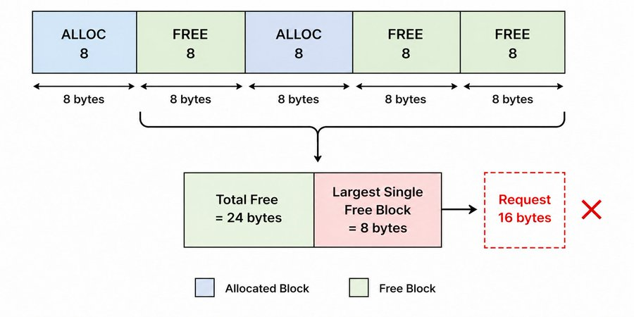
The fix is coalescing. When a block is freed, check its neighbors in the list. If any adjacent blocks are also free, merge them into one larger block.
There are two directions to check: forward and backward.
Forward is straightforward. After marking a block free, check if the next block in the list is also free and physically adjacent in memory. If yes, absorb it.
if(ptr->next && ptr->next->is_free &&
(char*)ptr + sizeof(block) + ptr->size == (char*)ptr->next) {
ptr->size += sizeof(block) + ptr->next->size;
ptr->next = ptr->next->next;
}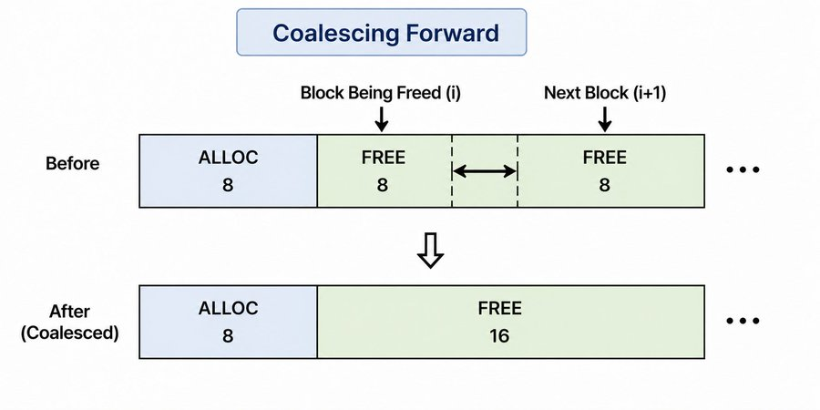
The adjacency check (char*)ptr + sizeof(block) + ptr->size == (char*)ptr->next is important. Just because two blocks are next to each other in the linked list does not mean they are next to each other in memory. You have to verify they are physically adjacent before merging, otherwise you corrupt memory.
Backward works the same way but in reverse. Walk the free list from the start to find the block that points to the current block. If that previous block is free and adjacent, merge the current block into it.
block* current = free_list;
while(current && current->next != ptr) {
current = current->next;
}
if(current && current->is_free &&
(char*)current + sizeof(block) + current->size == (char*)ptr) {
current->size += sizeof(block) + ptr->size;
current->next = ptr->next;
}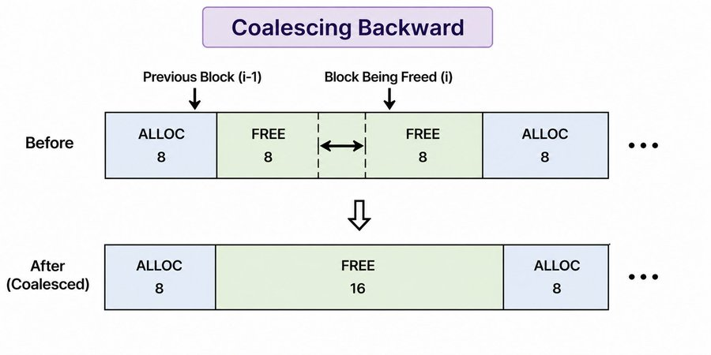
One more thing that makes or breaks coalescing: the free list must be sorted by memory address. If blocks are inserted in random order, the adjacency checks fail because physically adjacent blocks end up non-adjacent in the list. Every new block gets inserted at the correct position by address, not prepended to the front.
Why mmap alone breaks coalescing, and the memory pool fix
The first version of this allocator called mmap for every single allocation. It worked for basic allocation and reuse, but coalescing never triggered. The reason comes down to how mmap works.
Every mmap call returns a completely independent region of virtual memory. Two consecutive mmap calls do not give you adjacent memory. They can land anywhere in your address space, pages apart. So even if you free two blocks and they are next to each other in the free list, the adjacency check always fails because physically they are nowhere near each other.
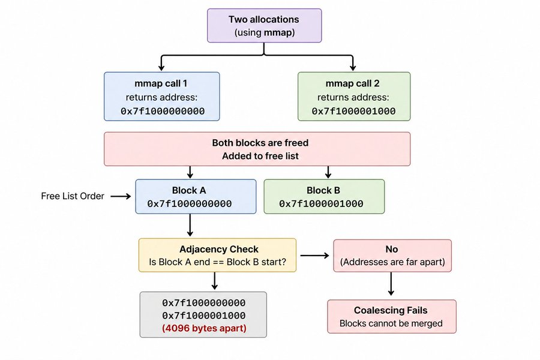
No matter how correct your coalesce logic is, it cannot merge blocks that are not physically next to each other in memory.
The fix is a memory pool. Instead of calling mmap per allocation, call it once upfront for a large chunk, say 1MB. Then carve all allocations out of that single contiguous region yourself.
char* pool_start = nullptr;
char* pool_current = nullptr;
void init_pool() {
pool_start = (char*)mmap(NULL, 1024*1024, PROT_READ | PROT_WRITE,
MAP_PRIVATE | MAP_ANONYMOUS, -1, 0);
pool_current = pool_start;
}
Now every block sits inside the same region. pool_current acts as a bump pointer, advancing forward with each allocation by the size of the block plus its metadata.
block* meta = (block*) pool_current;
pool_current += total_size;With all blocks contiguous in one pool, the adjacency check in coalesce actually has a chance to pass. Two adjacent blocks in the free list are now also adjacent in memory.
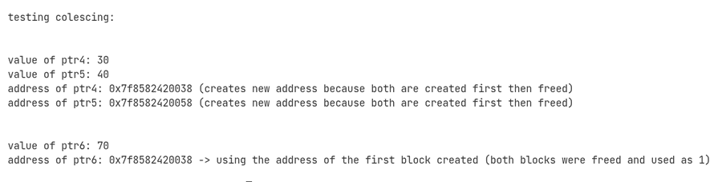
This is also closer to what real allocators do. jemalloc and tcmalloc both manage large pre-allocated regions internally rather than going to the OS for every small allocation. The pool approach trades some upfront memory for much better allocation performance and predictable memory layout.
Conclusion
If you made it this far, you now understand everything that goes into a basic memory allocator. Virtual memory, page tables, how the OS hands out memory, block metadata, free lists, alignment, allocation strategies, coalescing, and why memory layout matters more than you think.
This is not a production allocator. It has no thread safety, no block splitting, no pool overflow handling. But that is not the point. The point is that none of this is magic anymore. When you call malloc in any program, you now know roughly what is happening underneath.
If you want to build your own, this article is the foundation. Start with a simple pool, get allocation and free working, add the free list, then add coalescing. Each piece builds on the last. The code is on GitHub if you want a reference, but write it yourself first.
The best way to understand systems is to build them from scratch and break them in interesting ways. This was one of those builds.